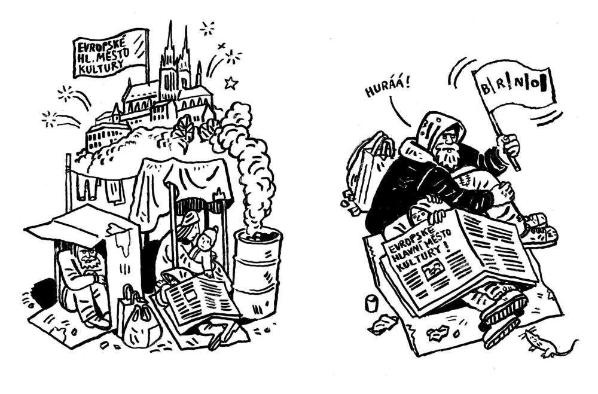

Vážená paní primátorko, vážení radní, vážené zastupitelky a zastupitelé,
my níže podepsaní lidé činní v brněnské kultuře se na vás obracíme s urgentní žádostí, ke které – věříme – přistoupíte se vší vážností.
Vedení města Brna oznámilo, že chce získat pro naše město titul Evropské hlavní město kultury. To je důležitý signál pro zdejší živou kulturu jako určující součást identity města a moc za něj děkujeme.
Toto úsilí je však znevěrohodněno současným děním na brněnské radnici, která prostřednictvím Rady ohlásila, že prakticky zastavuje projekt ukončování bezdomovectví.
Brno svými programy Rapid Rehousing a Housing First ukázalo směr celé České republice a Ministerstvo práce a sociálních věcí na popud Evropské komise právě na základě brněnského příkladu vypsalo speciální výzvu (s číslem 108), do které se hlásí mnoho měst z celé republiky, aby jim desítky milionů z dotací pomohly v ukončování bezdomovectví. Rada města Brna naproti tomu oznámila, že Zastupitelstvu navrhne, aby se v rámci této výzvy zažádalo jen o podporu na 10 bytů pro rodiny a 10 pro jednotlivce. Vzhledem k délce trvání projektu se jedná o 5 bytů pro rodiny ročně.
Jak je přitom známo, v Brně žije několik set rodin bez domova, a 5 nebo 10 bytů pro rodiny s dětmi nic neřeší. V nejbližší době budeme navíc čelit akutnímu problému s ubytovnou na Olomoucké, která se zanedlouho zavře a „na ulici“ se ocitne několik desítek rodin; připojí se tak ke stovkám dalších rodin v bytové nouzi.
Brno mělo možnost získat desítky milionů mimo jiné například na dovybavení bytů a prokázat, že ukončování bezdomovectví je součástí odpovědné bytové a sociální politiky města. Místo toho nechává peníze ležet ladem a paběrkuje s pár byty.

Možná se divíte, proč vám tuto výzvu směřujeme my, umělci a lidé činní v brněnské kultuře, co je nám do toho, co Brno dělá v jiných oblastech politiky, proč se do toho pleteme. Rádi vám odpovíme: Kultura není jen nějaké pozlátko, není to kratochvíle pro rozptýlení bohatých lidí, co na to mají. Kulturní město je v prvé řadě takové město, které se kulturně chová ke svým obyvatelům. Není možné na jedné straně dávat stovky milionů do opery, muzikálu, filharmonie či činohry a na druhé straně nechat malé děti živořit na ulici, v ubytovnách nebo v dětských domovech. Zvláště v podmínkách Brna, které má komfortní výchozí situaci s vlastnictvím desítek tisíc bytů.
O kultuře vždy hovoříme v kontextu společenském. Sociální a kulturní vyspělost jdou ruku v ruce. Kultura je ze své podstaty integrační nástroj, její jazyky – hudba, slovo, pohyb či výtvarno – jsou univerzální. Kultura stejně jako vzdělání má být přístupná všem bez ohledu na společenskou a ekonomickou situaci.
Je nezpochybnitelné, že jakékoliv aktivity směřující k řešení sociálního vyloučení jsou podmíněny možností důstojně bydlet. Bez vyřešení této potřeby není efektivní soustředit se na další aspekty sociálního vyloučení.
Proto na tomto místě jasně říkáme: Pokud myslíte svůj záměr kandidatury na Evropské hlavní město kultury vážně, resp. pokud myslíte vážně profilaci Brna jako kulturního města, začněte u těch nejohroženějších. Jinak nemůžete mít podporu nás, kteří se věnujeme umělecké činnosti nebo kulturní produkci. Nestojíme o to stát se hlavním městem kultury, které svým vlastním obyvatelům nezajistí důstojné bydlení.Odmítáme účastnit se budování Potěmkinovy vesnice, která má krásně načančané fasády, za nimiž však žijí lidé v bídě a strachu z toho, že zítra nebudou mít kam uložit svoje děti. Pokládáme ostatně za vyloučené, že by asociálně se chovajícímu městu mohl být takový titul vůbec udělen.
Pokud stojíte o naši spolupráci při usilování o titul kulturního města, vyzýváme vás, abyste zažádali z prostředků EU o maximum možných financí. Vyzýváme vás, abyste se nevymlouvali na nastavení podmínek výzvy, protože všichni víme, že Brno má ročně stovky volných bytů a může je bez problémů použít. Žádáme vás, abyste řekli, že za tyto načerpané peníze ukončíte bezdomovectví vyšším desítkám rodin, ne jednotkám, jak to plánujete dnes.
S městem, které pečuje o své nejslabší, chceme a budeme velmi ochotně a nadšeně spolupracovat.
A protože je pro nás kulturní oblast těsně spojená s tou sociální, navrhujeme, aby ukončování chudoby a řešení bytové nouze bylo rovnou hlavním motivem kandidatury na Evropské hlavní město kultury pro rok 2028. To, že zde bude hrát dobře opera a filharmonie, to je tak nějak samozřejmé – Brno je zásluhou umělců a dalších lidí, kteří v kulturních institucích působí ve vedoucích i všech dalších pozicích, bohudíky na vysoké úrovni. Ale to v evropském kontextu příliš zajímavé není. Zajímavé je dát si ambiciózní cíl – v roce 2028 předvést Brno jako město, které skoncovalo s chudobou a které nemá žádné dlouhodobé bezdomovce, přinejmenším ne mezi rodinami. Předvést Brno jako hlavní město kultury, která je pro všechny, ne pro vyvolené.
Nepromarněte prosím příležitost představit Brno jako hrdé a sebevědomé město, v němž kultura symbolizuje lidskou důstojnost.